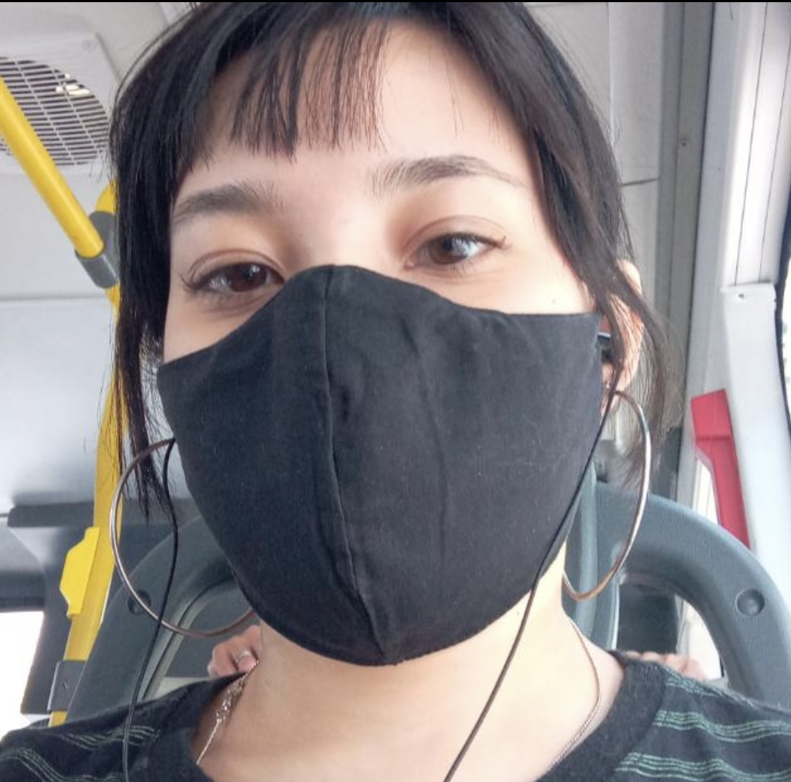

|

|
Naomi Iha
Técnica em Biblioteconomia e estudante de Desenvolvimento de Software Multiplataforma na Fatec de Osasco. Apaixonada por tecnologia, design gráfico e cultura, acredita na democratização do acesso à informação.
|
|
Hudson Vinicius
Ingressou no curso de Desenvolvimento de Software Multiplataforma na Fatec Osasco. Tem como objetivo futuro ser voluntário em alguma área da tecnologia, por isso ajudou nessa ODS/Projeto Integrador, por ser um tema importante e altamente relevante para a sociedade.
|